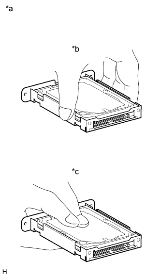

HARD DISK DRIVE > PRECAUTION |
| 1.PRECAUTION FOR DISCONNECTING CABLE FROM NEGATIVE BATTERY TERMINAL |
| Condition | Waiting Time |
| Vehicle enrolled in safety connect system | 6 minutes |
| Vehicle not enrolled in safety connect system | 1 minute |
| 2.PRECAUTIONS FOR DISPLAY AND NAVIGATION MODULE DISPLAY |
An HDD is built into the display and navigation module display to store map data, etc. which will be used for the navigation system. Therefore, care must be taken with the following points when handling it:
| *1 | Hard Disc | *2 | Display and Navigation Module Display |
| *a | Example | - | - |
Do not apply any vibration or shock to the display and navigation module display.
Do not remove the display and navigation module display if there is a risk that condensation may occur.
Take measures to prevent static electricity.
Keep the display and navigation module display away from magnets or magnetized items.
| 3.PRECAUTIONS FOR HARD DISC (HDD) |
The map data for the navigation system is stored on the Hard Disc Drive (HDD). Make sure to follow the following instructions when replacing the HDD:
The HDD must only be replaced with a new one. Do not attempt to install a used HDD from another vehicle.
|  |
Do not touch the HDD cover.
| *a | Example |
| *b | CORRECT |
| *c | INCORRECT |
Do not apply any vibration or shock to the HDD.
Do not remove the HDD if there is a risk that condensation may occur.
Take measures to prevent static electricity.
Keep the HDD away from magnets or magnetized items.
Inspection after HDD replacement.
| 4.PRECAUTIONS DURING REPLACEMENT |
Procedures where static electricity countermeasures are necessary
Hard disc replacement.
Internal wiring connection/disconnection, inspection, and replacement.
Precautions during procedures
Before performing any procedures, touch an unpainted metal part or ground bolt of the vehicle to eliminate any static electricity.
To prevent damage to electrical equipment, disconnect the battery power supply before installing and removing electrical equipment.
Never touch a circuit board's electronic parts, or an integrated circuit's pins.
When performing procedures, do not allow clothing to come near or contact parts.